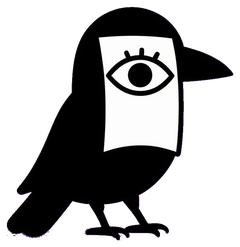
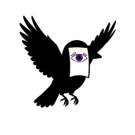

Sync your library from the relay.
Scan the linking QR on your desktop
Camera access is required to scan the linking QR.


Managed on the desktop. Change the model or key there and it syncs here.
Questions, captures, facet edits, and syncs. Tap a row for the full record.